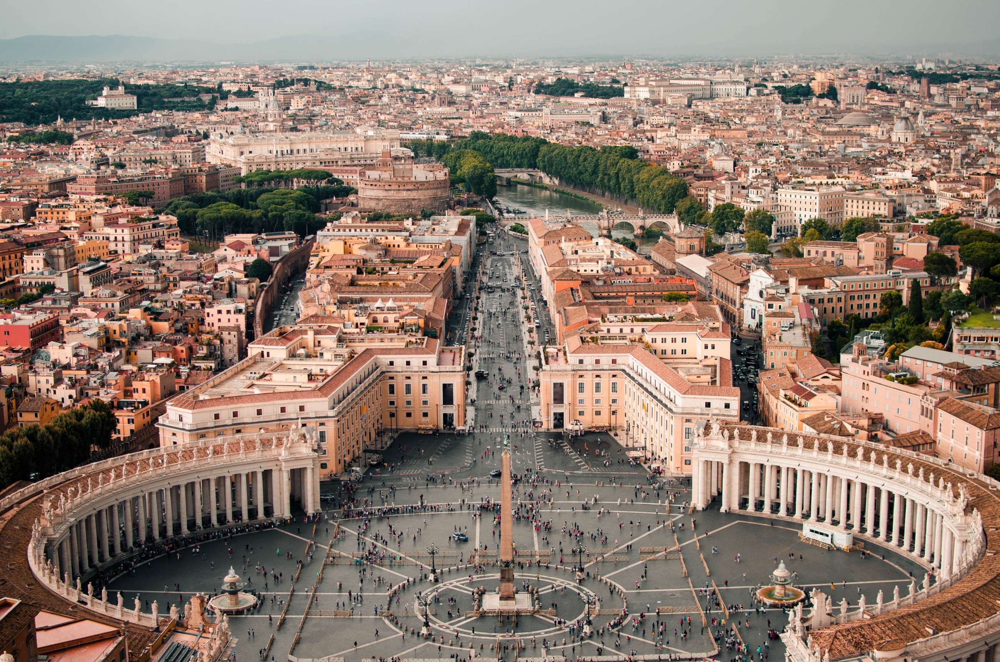

Points of Interest
Rome is known for its stunning architecture, with the Colleseum, Pantheon, and Trevi Fountain as the main attractions.
Rome's history spans 28 centuries. While Roman mythology dates the founding of Rome at around 753 BC, the site has been inhabited for much longer, making it one of the oldest continuously occupied cities in Europe.
Rome is 4292 miles from New York, and the area inside the boundary of Rome is 1,285 km2, or 496.1 sq miles. The area of New York City is 468.9 square miles.
The Roman Empire was one of the greatest and most influential civilisations in the world and lasted for over a 1000 years.
In 476 C.E. Romulus, the last of the Roman emperors in the west, was overthrown by the Germanic leader Odoacer, who became the first Barbarian to rule in Rome. The order that the Roman Empire had brought to western Europe for 1000 years was no more.